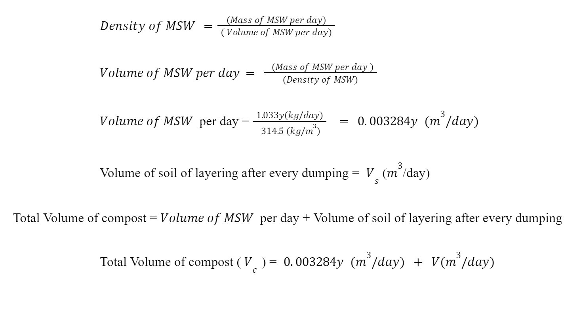
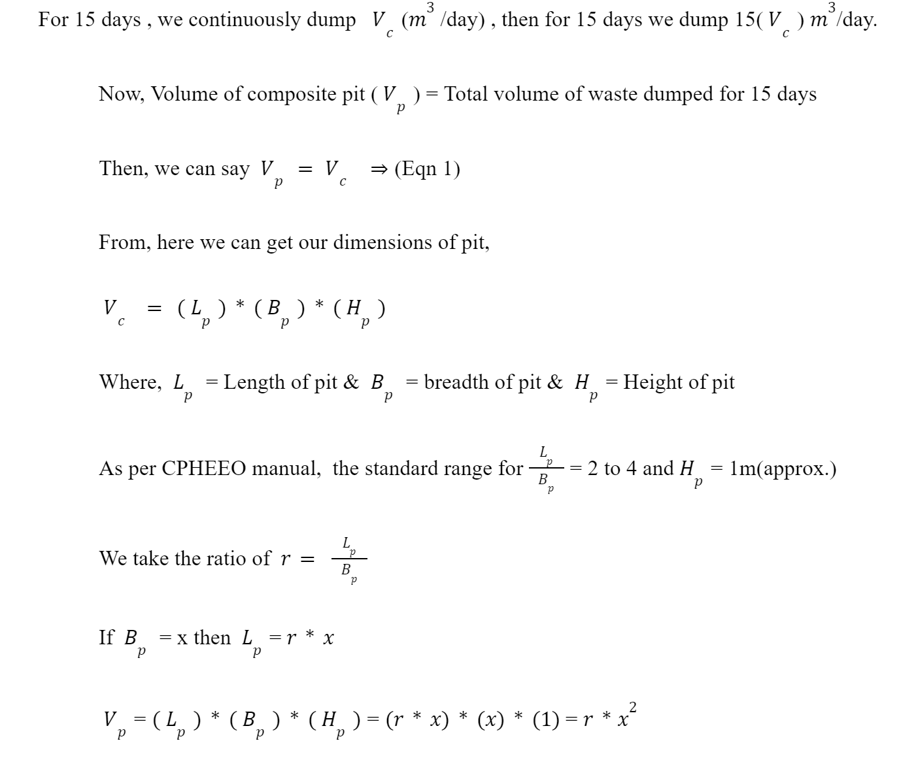
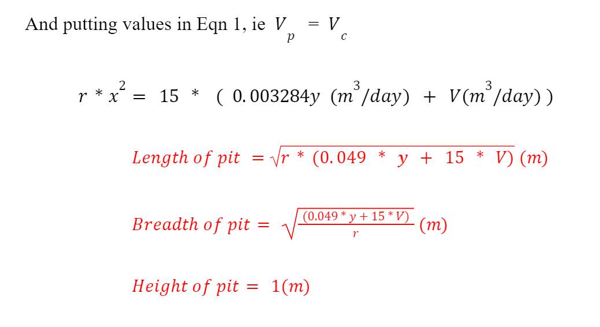

Engineering Design
The designing of compost pit for pit of various cross sections like rectangular , trapezoidal and cylindrical. In the project we are going to make a rectangular cross section as it is easy to make in the field.
Composting period (detention time) = 30 days
Average Density of Municipal solid Waste = 314.9Kg/m3
Carbon to Nitrogen ratio = 30:1
The carbon content is composed of dry waste such as dry leaf, food waste and nitrogen including vegetable peels, green leaf. Let y(m3/day) be the carbon content then y/30 (m3/day) be the nitrogen content to be used for composting per day.
Then, total volume of waste generated per day is 1.0333y (kg/day)



Thank you for Watching
https://docs.google.com/presentation/d/1nXvPagcuIu52U7lNGxPlyz7jVuivHIYi/edit?usp=sharing&ouid=108369662751170103718&rtpof=true&sd=true